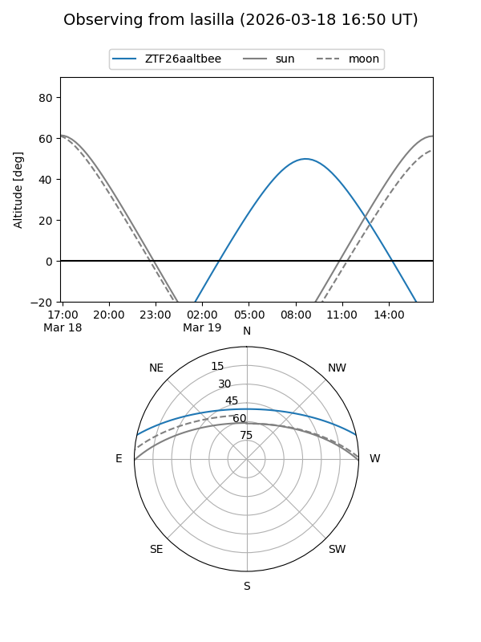
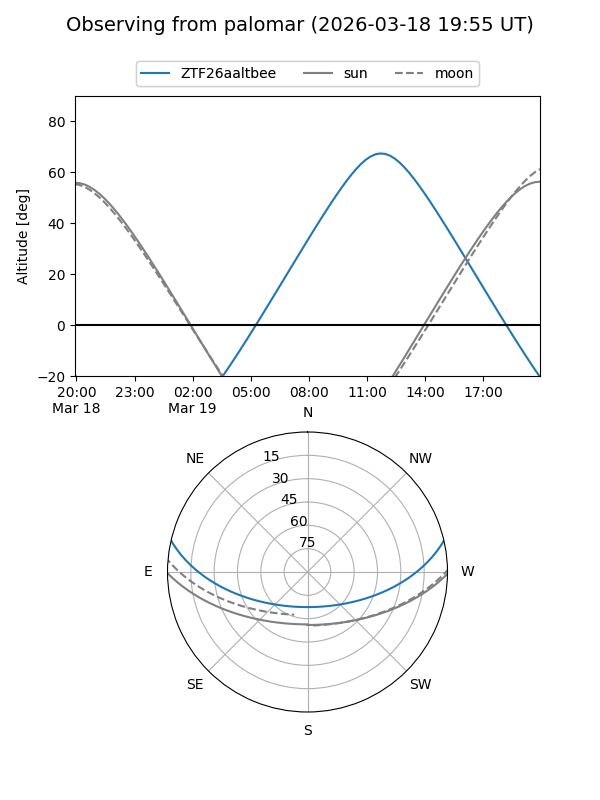

ZTF26aaltbee
Target ZTF26aaltbee at 2026-03-18 15:34
Aliases and brokers:
FINK: link
Lasair: link
ALeRCE: link
alt names
ZTF26aaltbee (ztf,fink_ztf)
Coordinates:
equatorial (ra, dec) = 235.6948,+10.87896
equatorial (HMS+DMS) = 15:42:46.74,+10:52:44.27
galactic (l, b) = (19.4236,+46.63291)
Flags:
Photometry:
last ztfg=19.91
1 ztfg detections
Lightcurve
Visibility


Additional plots